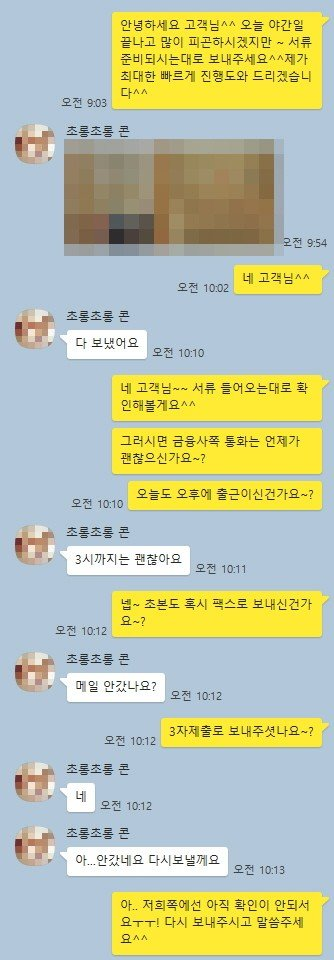
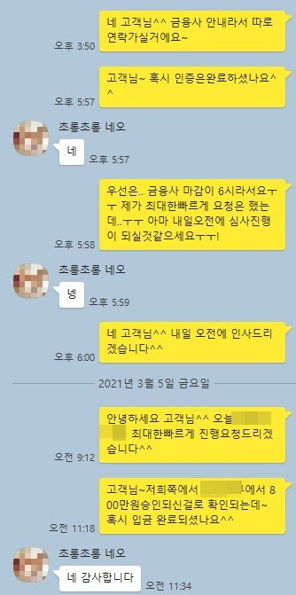

개인회생자 4대보험가입직장인 미납2.51회 800만원 승인사례
안녕하세요~ 뱅크앤론 상담원 백진주입니다~~^^
오늘은 제가 상담드린 유**고객님의 대출 사례를 안내해 드리겠습니다.
유**고객님께서는 개인회생중인 4대보험이 가입되어 있는 직장인 이셨으며 재직기간은 8년재직하셨고 ,월소득은 280만원 정도 되셨습니다.
총회차는 36회차 중 납입회차는 25회납입 미납회차는 2.51회 월변제금은 1,224,612원 납부하고 계셨습니다.
기대출은 주택보증대출1500만원,태강대부1000만원을 이용중이셨고 총 2500만원이였습니다.
고객님께서는 필요하신 자금은 따로 없으셨고 미납금납입과 추가자금이 필요하셨고, 저희 뱅크앤론은 지인소개를 통해서 상담진행으로 신청하셨습니다 .
저는 고객님에게 가능한 금융사 안내를 해드렸고 그 결과 한금융사에서 800만원 추가자금으로 확보하는데 성공하였으며 고객님께서는 매우 만족해 하셨습니다.
추가로 3개월이 지나는 시점에 채무통합대환으로 다시 도움드리기로 했습니다.
아래는 저와 유**고객님의 카톡상담 내용 일부를 캡쳐한것이오니, 참고하시어 많은 도움 되셨으면 좋겠습니다. 감사합니다^^

